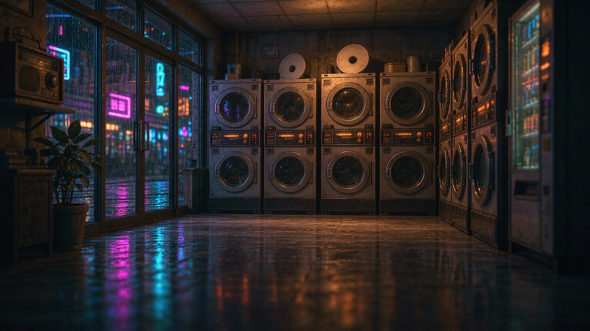
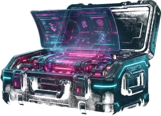
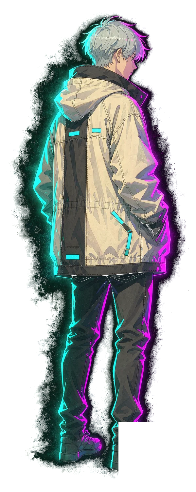
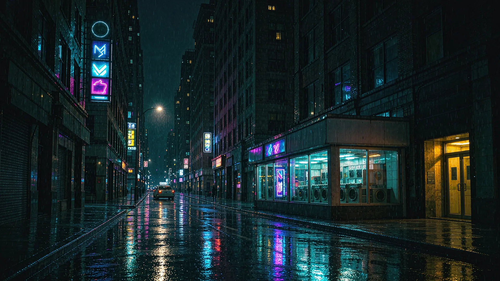

开发期工具，刷新即恢复原值

交互式短篇 · 第 01 夜
凌晨三点，雨还没停。洗衣店的灯还亮着。
点地面移动 · 点动静卡片看下一条 · 点店门进店
凌晨三点的洗衣店值机员。雨夜、卷帘门、和一台总在 3 号位转的老洗衣机。
权限等级
线索档案
雨小了。卷帘门拉下来，该收工了。
那件外套还在 3 号机里转。天亮以后我会把它取出来，叠好，放进失物柜的第三层——前两次都在那儿。
这店还剩三个月。三个月里的每一个夜班，我都会把灯留着。
亮着，总比黑着强。